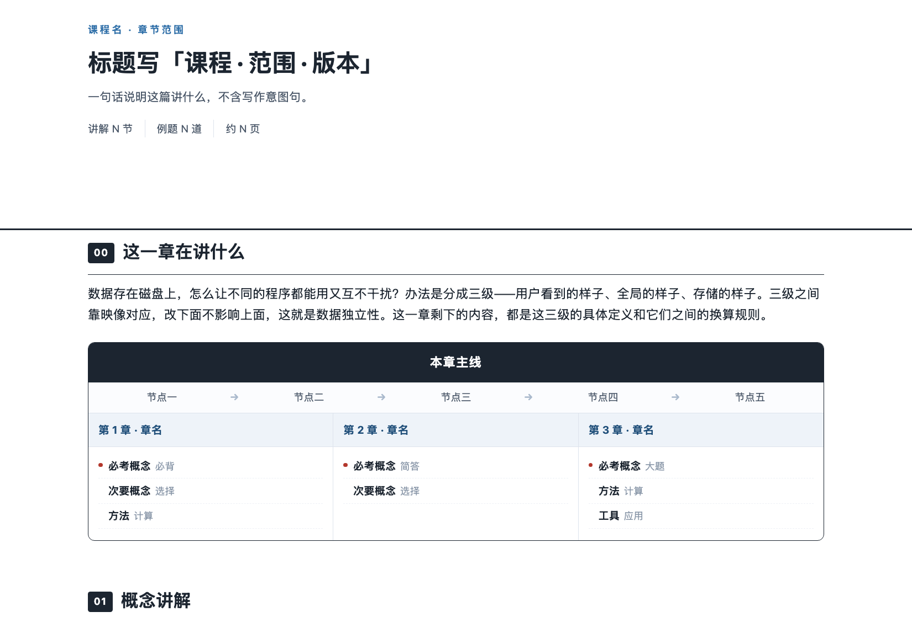

把教材、真题、笔记整理成一篇能读懂、能照抄、能当模板套的讲解文章。输出单文件 HTML 与 A4 可打印 PDF。
用 AI 写知识总结，九成写成目录搬运：定义 1、定义 2、性质 1、性质 2。读者拿到的是一堆孤立条目，还得自己建立联系。
这个 Skill 强制换一种写法：先讲这一章要解决什么问题，再讲概念为什么被造出来，然后才是定义。
| 罗列 | 讲解 | |
|---|---|---|
| 顺序 | 定义 1 → 定义 2 → 性质 1 | 要解决什么 → 为什么造它 → 定义 → 例子 → 容易混在哪 |
| 读者 | 要自己建立联系 | 顺着读就懂 |
| 例题 | 单独一块题库 | 用来印证概念 |

每个概念至少回答其中三问。这是整个 Skill 的质量底线。
| 段落 | 占比 | 内容 |
|---|---|---|
| 00 这一章在讲什么 | 8% | 7 句讲清主线 + 演进图 + 知识点图谱 |
| 01 概念讲解 | 50% | 一节一个概念组，五问法 |
| 02 例题 | 30% | 题目 + 完整答案 + 左代码右解释 |
| 03 考点与易错 | 7% | 分值分布 + 错法对照 |
| 04 一页速记 | 5% | 数字、口诀、勾选清单 |
左边是代码，右边是这一行在干什么，同一行水平对齐。
对比两种常见写法为什么不行：
| 写法 | 问题 |
|---|---|
| 语法模板 + 参数说明表 | 两处信息要来回跳，且模板脱离题目没意义 |
| 代码 + 下方箭头注释 | 眼睛上下扫，找不到哪句注释对应哪一行 |
| 左代码 / 右解释（同一行） | 视线不跳跃，右栏顺手完成"通用写法 → 这里填了什么"的换算 |
git clone https://github.com/dxkjuanjuan/juanjuan-knowledge.git # WorkBuddy cp -r juanjuan-knowledge ~/.workbuddy/skills/ # Claude Code cp -r juanjuan-knowledge ~/.claude/skills/
新开一个会话即可。触发语：「把第 3 章写成知识点讲解」「整理成能打印抄写的笔记」「把这一章的概念讲明白」。